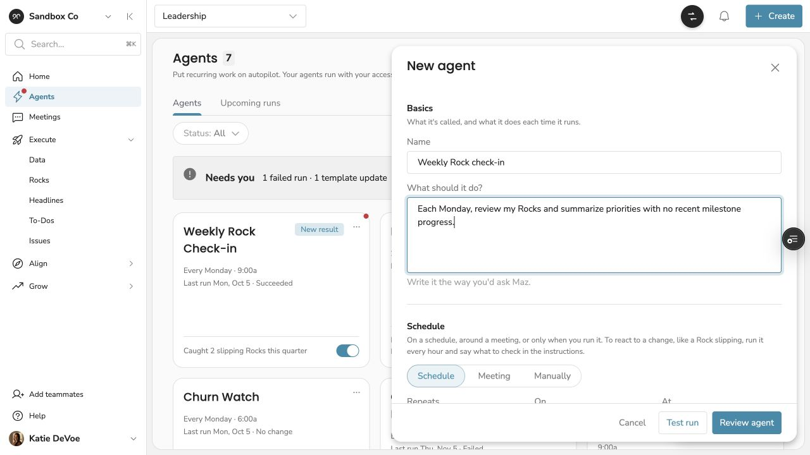
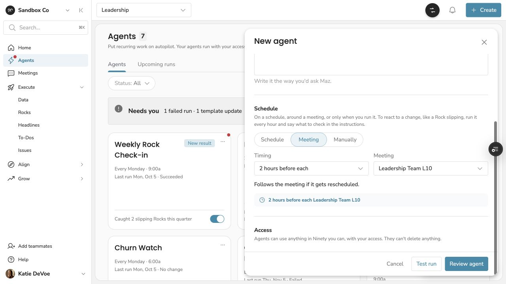

The design decision
Remove tool selection. Explain access plainly. Let people focus on the work they want to delegate.
Jump to the defining decision ↓The opportunity
Recurring work, without starting over
Ninety helps teams manage quarterly priorities (Rocks), metrics (Scorecards), tasks, issues, and weekly meetings. The same preparation repeats every week: checking missing numbers, spotting slipping priorities, and assembling meeting agendas.
I owned the entire UX and UI design for Agents: a way to delegate recurring work to Maz, Ninety’s AI assistant. The experience has shipped to alpha. Adoption and engagement results are not yet available.
Staff Product Designer. End-to-end UX and UI.
My role
I took the experience from competitive research and concept through interaction design, final UI, coded prototyping, alpha feedback, and engineering handoff. I partnered with product management and engineering on scope and feasibility.
I built the interactive design prototype in a design-team fork of Ninety’s Angular application, using real Terra components and routing with simulated data and no backend. Engineering handled production implementation.
Make the tradeoffs something people can try
Research & process
I mapped about 80 annotated reference screens into 11 interaction patterns, including scheduling, chat-based creation, approvals, agent details, and template selection. This gave the team shared references for decisions.
I built comparisons into the prototype: form-first versus chat-first creation, template layouts, notification scope, approval models, and on-time versus delayed runs. Stakeholders could try the alternatives in the product context.
I kept roughly 22 Figma frames aligned with the prototype and maintained a living engineering handoff and dated decisions log. Superseded explorations stayed visible so the reasoning remained traceable.
The defining decision
The best tool picker was no tool picker
Alpha feedback exposed a failure: an agent created without selected tools could not find a named metric, then returned a vague error. A setup choice had become a reliability problem.
I explored three responses: grouping tools in familiar product language, having Maz recommend tools from the instructions, and blocking creation until tools were selected.
Walking engineering through the recommendation flow revealed a simpler approach. Giving agents all tools allowed by their creator’s access was more reliable and, through prompt caching, less costly than predicting a subset. We removed tool selection entirely.
The explanation became: “Agents can use anything in Ninety you can, with your access. They can’t delete anything.” The design work helped make a confusing prerequisite unnecessary.

Trust & control
Autonomy with understandable boundaries
Personal ownership: agents run with their creator’s access and are managed by that person. Shared templates support reuse without sharing control of the original agent.
Transparent templates: using a template creates an independent copy. People inspect the full instructions before activation. Later changes are offered as a choice: update the copy or keep it.
Meaningful status: I removed low-value labels such as “Healthy” and focused attention on exceptions—needs attention, paused, draft, and new results.
Honest timing: a queued run says “Starting soon” alongside its scheduled time. Longer delays get an explicit attention state; late runs show both actual and scheduled times.
Actionable failures: messages explain the problem in everyday language and offer a next step, such as editing instructions or retrying.

Shipping decisions
A focused alpha, with beta decisions kept visible
Form-first creation became the alpha default when chat-first creation moved to beta scope. I kept both options in the prototype so the team could compare them.
Agents act as their creator, exposing a platform limitation around notifying someone about their own actions. I documented the dependency for an agent or system notification sender and retained the notification designs for beta. Notifications are not an alpha outcome.
Working from 23 starter templates, I explored search, fixed categories, and suggestions based on a person’s seat. Templates can belong to multiple categories. The categorized browsing design remains an area for validation.
Design system
Make the feature feel native to Ninety
I used Terra components throughout and contributed where the system had gaps. Purple stayed reserved for Maz touchpoints; operational notices used neutral alerts instead of AI styling.
I added a missing Alert type in code, aligned card interaction states, and replaced custom controls with Terra buttons, chips, badges, search, counters, and alerts.
I documented gaps in selected chip states, menu consistency, and focus contrast for the system team. Product work exposed opportunities to improve the shared system.
Outcomes & next steps
Shipped to alpha. Ready to learn.
My design work delivered the complete UX and UI, an interactive prototype, a synchronized Figma set, research references, and an engineering handoff with decision history. The experience has shipped to alpha.
The scope became simpler: no tool picker, form-first creation, and a curated template library. Notification delivery remains dependent on platform work for beta.
The PRD sets a target of 16.5% agent adoption among paying Maz companies by late December 2026. This is a target, not an achieved result. A second question is whether companies running agents use Maz more each week than comparable companies that do not.
Next, I would validate template discovery and creation with alpha users, partner on notification delivery, and bring documented component gaps into Terra.
Design can make complexity unnecessary
Reflection
The most useful contribution was making tradeoffs visible early. Working comparisons, shared research, and a clear decision history helped the team reach simpler answers.
The tool picker is the clearest example: several rounds of design became the evidence for removing it. I count that as a successful design outcome.